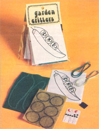
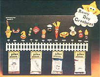

It's no secret that times are economically "tough all over" . . . especially in some selected industries (housing construction, for instance) and the areas of the United States (such as the lumber-producing Pacific Northwest) that serve them.
And Darla Holden and Pam Parmenter - two young Eugene, Oregon housewives - understand these facts even better than most . . . for a number of reasons:
First, they live right in the middle of the region hardest hit by the current building slump. Second, their husbands are both new-construction housepainters who - quite obviously - have nothing to paint when no homes are being built. Third, because they've always operated as independent contractors, Darla's and Pam's spouses weren't even eligible for unemployment benefits when their work ran out. Fourth, the two women find it difficult to seek outside employment on their own at this time, since - between them - they have three small children to look after. And fifth, one of those children - a one-year-old - was born with birth defects that have already cost Pam and her husband more than $15,000 to correct.
It's not surprising, then, that Darla and her husband - through no real fault of their own - have already lost their comfortable home, and Pam and her spouse have so far barely managed to hold on to theirs.
What is surprising in this age of whining and demands that "someone should take care of me" is the way in which Pam and Darla are bootstrapping themselves out of their current predicament. Very simply, the two plucky women have rolled up their sleeves and founded a tiny company, Rainy Day Creations, that packages kits for the do-it-yourself handicraft market.
The first RDC "line" is a series of 12 refrigerator magnets (you know, the little gizmos you use to stick notes, memos, clippings, coupons, etc. on a refrigerator or a metal bulletin board).
Unlike the plastic, mass-produced, rather sterile refrigerator magnets sold in variety stores, however, RDC's "vegetable people" have real character: The onion cries a tear . . . the bean sports a navy cap . . . the potato looks at the world with four eyes . . . three peas nestle in a pod . . . and all the little faces are bright and cheery.
Furthermore, Darla and Pam's crafty "babies" are soft enough to be chewed on safely but too big to swallow . . . just in case they fall into the possession of a toddler or the family pet. And they're so easy to whip together that they would make an ideal starter project for a sewing novice (even a child) . . . yet are professional looking enough for sale in a craft bazaar or for use as gifts.
Perhaps best of all, the RDC kits are complete down to the thread needed to stitch them together. You supply only a needle, a few spots of craft cement or glue, and some stuffing (perhaps aspirin bottle cotton, pieces of recycled panty hose, or tissue). And while the basic designs are clever and already "set", there's still plenty of room (in the way you position the eyes and smiles, for instance) to use your own creativity as you put Darla and Pam's cheerful little vegetables together. (One customer even assembles the completed characters into attractive mobiles that she gives away to friends.)
For these and other reasons (after all, the little note-holders are cute!), initial sales of Pam and Darla's Garden Critters have been quite good. One RDC account originally estimated it would move "maybe 16 kits the first month". Instead, it sold eight the first day!
Which just goes to show - once again - that it's darn hard to keep a good woman (or two) down if she (or they) ain't ready to buckle under the pressures of a soft economy, regular family obligations, children who need special care, or anything else.
EDITOR'S NOTE: Garden Critters are available in four kits of three vegetables each (corn, tomato, and squash . . . peas, radish, and potato . . . navy bean, carrot, and mushroom . . . and onion, eggplant, and asparagus). Each kit of three characters contains full assembly instructions and sells for $3.25 plus 75 cents shipping and handling ($4.00 total). Order yours from Rainy Day Creations, Dept. TMEN, 29310 Gimpl Hill Road, Eugene, Oregon 97402.
|
 |
 |
|